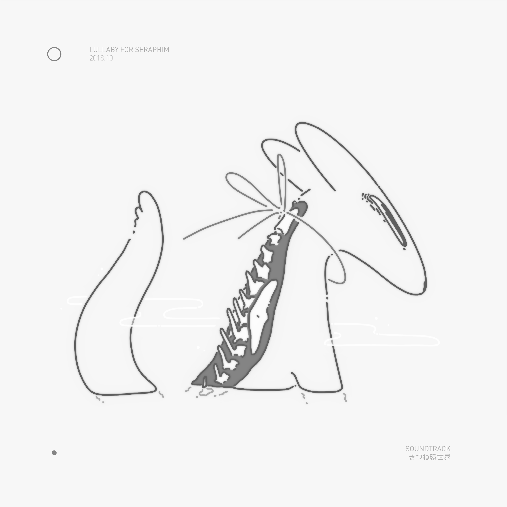

index/output/audio/osa/lullaby for seraphim
Lullaby for Seraphim is the second soundtrack created for ph418c. You can download Lullaby for Seraphim here.
2018.10 lullaby for seraphim tracklisting
1. Midnight in Time 02:00
2. Midnight in Abyss 02:00
3. Midnight in Silence 02:00
4. Midnight in Ultraviolet 02:00
5. Midnight in Nest 02:00
6. Midnight in Dust 02:00
7. Midnight in Bramble 02:00
8. Midnight in Literature 02:00
9. Midnight in Radio 02:00
10. Midnight in Numbers 04:00
11. Midday in Bifurcation 02:00
12. Midday in Festival 02:00
13. Midday in Glass 02:00
14. Midday in Concave 02:00
15. Midday in Fade 02:00
16. Midday in Analogue 02:00
17. Midday in Suite 02:00
18. Midday in Womb 02:00
19. Midday in Cavelight 02:00
20. Midday in Memory 04:00
2018.10 lullaby for seraphim cover

2018.10 lullaby for seraphim physical 1
2018.10 lullaby for seraphim physical 2
about | contact | source